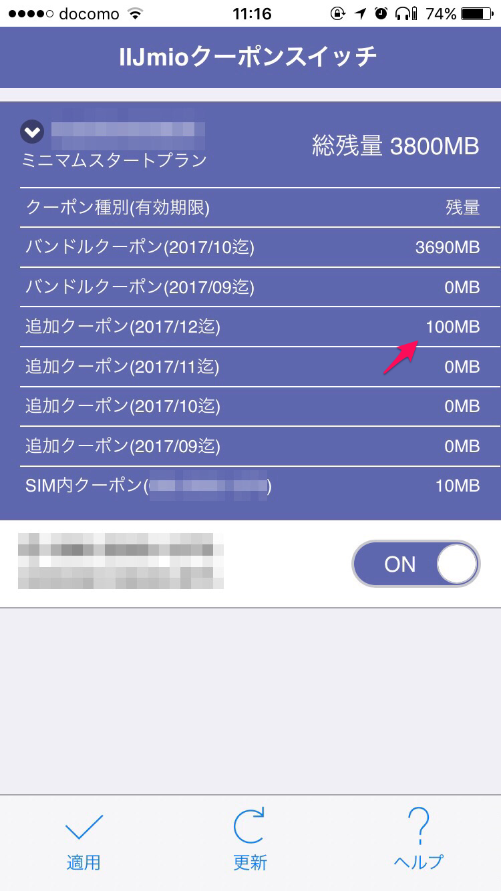
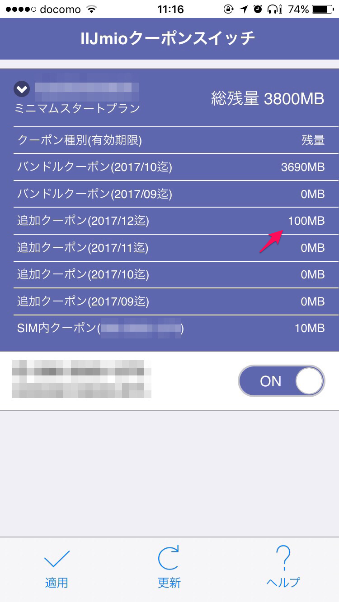
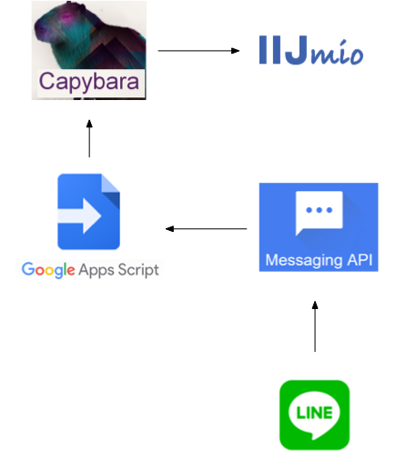

IIJmioの追加クーポンをLINE botに買ってもらう
IIJmioにはIIJmioクーポンスイッチというiPhoneアプリが用意されているが、 残りの通信量（IIJではクーポンと呼ぶ）を見ることはできても、追加購入することができない。 購入はブラウザから。
不便なのでLINE botに買ってもらうことにした。
実行画面
 

構成
- LINEメッセージをMessaging APIが受けて、Google Apps Scriptを発動
- GASはソケット通信でVPS上のrubyスクリプトを起こす
- rubyスクリプト上でCapybaraさんがIIJmioのウェブページにクーポン購入を依頼する 
クローラー作成
Kindleのハイライト通知のときと同じような作り。 動作環境も同じ。
# coding: utf-8
require 'capybara'
require 'capybara/dsl'
require 'capybara/poltergeist'
require 'selenium-webdriver'
class BuyIIJmioCoupon
include Capybara::DSL
SELENIUM = 0
POLTERGEIST = 1
USER_NAME = 'your_user_name'
PASSWORD = 'your_password'
def initialize(driver)
Capybara.app_host = 'https://www.iijmio.jp/service/setup/hdd/charge/'
Capybara.default_max_wait_time = 5
case driver
when SELENIUM
Capybara.current_driver = :selenium
Capybara.javascript_driver = :selenium
Capybara.register_driver :selenium do |app|
Capybara::Selenium::Driver.new(app, :browser => :chrome)
end
when POLTERGEIST
Capybara.current_driver = :poltergeist
Capybara.javascript_driver = :poltergeist
Capybara.register_driver :poltergeist do |app|
Capybara::Poltergeist::Driver.new(app, {:timeout => 120, js_errors: false})
end
page.driver.headers = {'User-Agent' => 'Mac Safari'}
end
end
def login
visit('')
fill_in 'j_username',
:with => USER_NAME
fill_in 'j_password',
:with => PASSWORD
click_button 'ログイン'
end
def buy
select '1枚（100MB）', from: 'selectList'
click_button '次へ'
check 'confirm'
click_button 'お申し込み'
end
end
crawler = BuyIIJmioCoupon.new(BuyIIJmioCoupon::POLTERGEIST)
crawler.login
crawler.buy
追加クーポン購入ページに直接アクセスして、ログインしたあとで、 購入枚数を選択して購入ボタンをポチポチ押していくだけ。購入枚数は1枚で固定した。
デバッグ用にSELENIUMで動作させることもできるようにしている。
VPSで待ち受ける
これもKindleのハイライト通知と同じ。 上のソースを少し変えて、以下のようにする。
# coding: utf-8
require 'capybara'
require 'capybara/dsl'
require 'capybara/poltergeist'
require 'selenium-webdriver'
require 'socket'
class BuyIIJmioCoupon
# 上と同じなので省略
end
gs = TCPServer.open(23456)
addr = gs.addr
addr.shift
printf("server is on %s\n", addr.join(":"))
crawler = BuyIIJmioCoupon.new(BuyIIJmioCoupon::POLTERGEIST)
loop do
s = gs.accept
print(s, " is accepted\n")
begin
crawler.login
crawler.buy
rescue
raise
end
print(s, " is gone\n")
s.close
end
Google Apps Script
LINE Messaging APIから以下のスクリプトを実行するように紐付ければ (参考)、 ソケット通信でVPS上のスクリプトを起こせる。
こちらから送った文章にiijという文字列が含まれている場合にトリガがかかるようにした。 なお、冒頭の実行画面ではLINE botからACKが返っているが、以下のソースでは省略している。
var CHANNEL_ACCESS_TOKEN = 'your_line_channel_access_token';
var SERVER_ADDRESS_IIJ = 'http://your_server_address.com:23456'
function doPost(e) {
Logger.log('doPost')
var events = JSON.parse(e.postData.contents).events;
events.forEach (function(event) {
if (event.type == 'message') { parseMessage(event); }
});
}
function parseMessage(e) {
if (e.message.text.match(/iij/)) {
buyIIJmioCoupon()
}
}
function buyIIJmioCoupon() {
UrlFetchApp.fetch(SERVER_ADDRESS_IIJ);
}
以上。